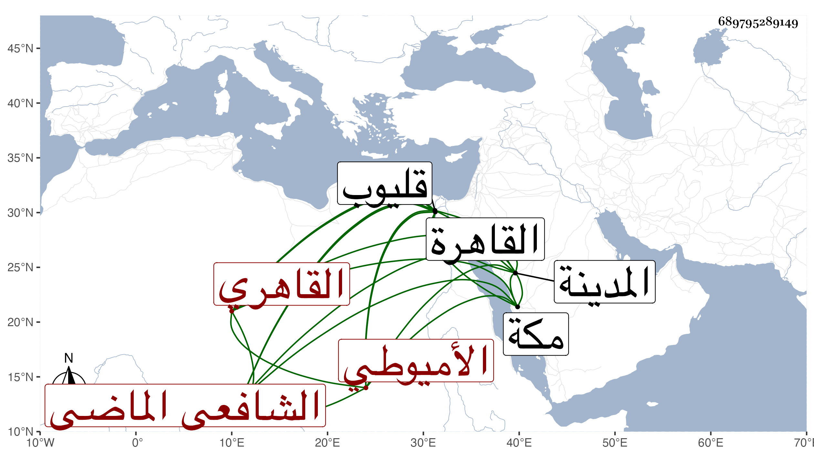

0902Sakhawi.DawLamic.ITO20230111-ara1.EIS1600.689795289149
Biography ID: 689795289149
978
محمد بن أحمد بن أسد بن عبد الواحد البدر أبو الفضل بن الشهاب الأميوطي الأصل القاهري الشافعي الماضي أبوه ويعرف كهو بابن أسد . ولد ظنا سنة أربع وثلاثين وثمانمائة بحارة بهاء الدين من القاهرة ونشأ بها في كنف أبويه فحفظ القرآن وكتبا جمة كالشاطبيتين والألفيتين والبهجة وجمع الجوامع والتلخيص وعرض على من دب ودرج ، وأجاز له في جملة بني أبيه من في استدعاء النجم ابن فهد وهم خلق من جل الآفاق وسمع الكثير على شيخنا بل وفي الظن أن والده أسمعه على ابن بردس وابن الطحان وابن ناظر الصاحبة وغيرهم ولازم والده في الفقه وأصوله والعربية والقراءات وكذا حضر تقاسيم الشرف المناوي وربما حضر عند العلم البلقيني وربيبه ثم لازم الفخر المقسي في الفقه وفرائض الروضة والعربية وقرأ على الزين زكريا أشياء وأكثر عن ابن قاسم بل قرأ على التقي الحصني في فنون وعلى الزين الأبناسي في آداب البحث وعلى الكافياجي في مؤلفه في علوم الحديث وتردد للبدر أبي السعادات في العربية وغيرها وللجوجري والبقاعي وآخرين ولازم المجيء إلي والأخذ عني ومراجعاتي في كثير وما كنت أحمد كثيرا من أموره مع يبس وبلادة وإظهار لمحبة الفائدة والشح بالعارية وغيرها وحج في سنة ست وخمسين وسمع معي بالمدينة النبوية على أبي الفرج المراغي وغيره وكذا سمع بمكة ، وناب في القضاء عن المناوي فمن بعده وتنقل في مجالس بل لما مات والده صارت إليه جهاته وفيها تدريس القراءات بالبرقوقية وبالمؤيدية وما يفوق الوصف كالخطابة بالأهناسية والإمامة بالزينية فباشرها وربما أقرأ الطلبة وسمعت أنه كان يكتب على البهجة الفقهية وكذا على منظومة للسخاوي في علوم الحديث ولم يكن من أهل هذه الزمرة وقد أعرض عنه الولوي الأسيوطي في النيابة فتفوه بالسعي عليه بسبعة آلاف دينار وكثرت القالة بذلك ودفع للعلاء بن الصابوني خمسمائة دينار على يد يهودي عنده افترضها منه فيما أخبرني به وما نهض لترقيه لذلك ثم نزل حتى ولي قضاء قليوب في الأيام الزينية ملتزما عن أقاوف الحرمين بزيادة على من قبله وصار يتوجه إليها في بعض أيام الأسبوع مع ثروته من الأملاك والوظائف واتهامه بمال كثير ولكنه كان ينكره بالحلف وغيره ولم يلبث أن تعلل ولزم الفراش نحو سبعين يوما بالإسهال والربو ونحوهما ، ثم مات في ليلة الأحد ثالث عشري ذي القعدة سنة تسع وثمانين وصلي عليه من الغد ودفن عند أمه بالقرب من الأهناسية وخلف أولادا ولم يوجد له من النقد فيما قيل شيء وخرج من وظائفه جملة رحمه الله وعفا عنه .
